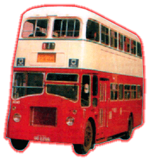

Leyland
- Titan PD3/4 & 3/5<
 |
引擎 Engine
容積 Engine Capacity 波箱 Gearbox
車身 Body Build
體積 Volume 載客量 Passager 服役年份 Year |
: Leyland 0600 Leyland 0680 Gardner 6LX : 不詳 : Leyland Manual 4-Speed Leyland Semi-Automatic : Burlingham Northern Counties : 不詳 : 不詳 : 1972 - 1988 |
Leyland Titan PD3 型，全部都是來自英國的二手巴士。全車都是英式設計，細小的車窗和絨毛面的座墊，中看不中用，對香港炎熱天氣，絕對不宜，但此批巴士亦是可以用來舒緩隧道車輛不足之情況。除了載客用途外，中巴又曾購 7 部 PD 巴士 (T1 - T7) 作為司機訓練之用。到了 83 年左右，中巴再替其車子更新，但車子並不獲重用，大部份時間都留在車廠內，作後勤服務。